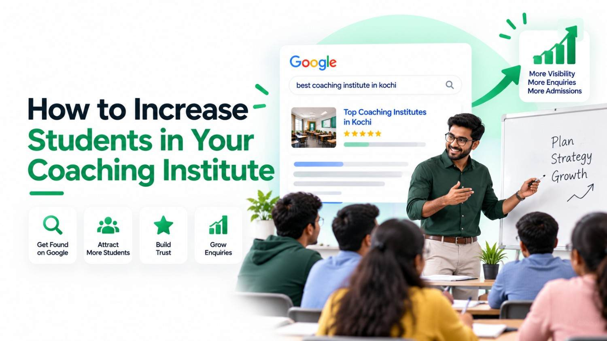

The new batch starts in three weeks and half the seats are still empty. Enquiries arrived steadily last year, but this year the phone is quieter, and the parent who walked in yesterday only heard about you from a relative. If that sounds familiar, this guide on how to increase students in coaching is written for you.
The short answer to how to get students for coaching classes: be easy to find where students search, and make it easy for them to enquire once they find you. For most institutes in Kerala, that search happens on Google Search and Google Maps, usually on a phone.
The five steps below form a practical, search-first coaching institute marketing strategy. You can do most of the work yourself with free tools you already have access to.
- Win "near me" searches with your Google Business Profile
- Build one useful page for each important course
- Turn genuine results and reviews into trust
- Make enquiring take one tap
- Publish answers to students' questions, and track results
Your Next Students Are Already Searching on Google
Students in Kerala actively look for coaching on Google, and many of their searches include a location. Keyword-tool data suggests thousands of monthly searches for PSC coaching alone. The institutes that appear for these searches get the first chance at an enquiry.
For example, Ubersuggest, a third-party keyword tool, estimated about 8,100 monthly searches in India for "psc coaching centre near me" and about 260 for "ielts coaching in kozhikode" when checked on 21 October 2026. These are approximate, they change from month to month, and they are not Google Search Console data from any institute.
A search is not an enquiry, and an enquiry is not an admission. What these numbers do show is intent: someone typing "psc coaching centre near me" is comparing options right now. Their searches usually fall into three groups:
- Location searches such as "near me" or "in Kozhikode". Google weighs the searcher's location against your listed address, so your Maps listing matters most here.
- Exam and city searches such as "ielts coaching in kozhikode" or "entrance coaching kerala". A page that names the exam and the city answers these directly.
- Course detail searches about fees, batch timings, admission dates, or online versus classroom options. These come later in the decision, and clear course pages and FAQs answer them.
Use these groups as a checklist: for each course, would a student searching in all three ways find a useful answer from you?
Why Google Decides Which Coaching Centre Students Call
Google tries to show the result most likely to answer a search. For coaching searches, that usually means a nearby institute with a complete listing, a page that matches the course, and clear signs that real students trust it. Nobody can guarantee a position, but you control all three of these inputs.
If you are new to the subject, our beginner's guide explains how SEO works in plain language. For a coaching institute, three things matter most:
- Google Business Profile visibility. Google says local results depend mainly on relevance, distance and prominence. You can't move your building, but a complete and accurate profile improves relevance.
- Course-specific website information. A page that clearly states what you teach, where, when and for whom gives Google something precise to match against a search.
- Trust signals. Accurate details, authentic reviews and results that can be verified help Google judge prominence. They also persuade the parent who is deciding whether to call.
How to Increase Students in Coaching: A 5-Step Google Plan
Work through the plan in order: appear on Maps, give each course a proper page, show why you can be trusted, remove friction from enquiries, then answer the questions students ask before joining. Each step makes the next one more effective.
Step 1: Win "Near Me" Searches With Your Google Business Profile
Your Google Business Profile is the listing shown on Google Maps and in map results on Search. For "near me" searches, it is often the first thing a student sees.
- Use your real business name exactly as it appears on your signboard. Adding phrases like "Best NEET Coaching Kozhikode" breaks Google's guidelines and can get the profile suspended.
- Keep your address, phone number and opening hours accurate, including holiday changes.
- Choose the most specific primary category that fits, such as a coaching, tutoring or test-preparation category, and add secondary categories only where they genuinely apply.
- List your courses where the profile offers a Services or Products section; features differ by category and region.
- Show current batch timings and the best number for enquiries.
- Upload genuine photos of classrooms, library, entrance and signboard, not stock images.
- Where posts are available, use them for new batches and admission deadlines.
- Reply to reviews and check the profile monthly, because the public can suggest edits to your listing.
Never create a profile for an address without a staffed branch, and never list misleading information.
In short: verify the profile, choose precise categories, keep details accurate, add real photos, collect genuine reviews and stay active. Features and visibility vary by business and location, and no setting guarantees a top position. Our Google Maps ranking tips cover each factor in more depth.
Step 2: Build One Useful Page for Each Important Course and Exam
A student searching "NEET coaching in Kozhikode" wants a page about exactly that, not a homepage listing twelve courses in one paragraph. A dedicated course page gives Google something specific to show and gives the student a reason to enquire.
Here is a template you can adapt. The NEET example is for illustration only; replace every bracket with your own verified details.
Create a separate page only when it has something distinct to say. A page for an IELTS batch in Kochi is useful if its timings, trainers and address differ from your Kozhikode batch. Copying one page and swapping the city name produces thin, near-identical pages that help neither students nor your visibility.
Step 3: Turn Genuine Results and Reviews Into Trust
Parents compare institutes before they call. Clear, honest evidence of results and student experience helps them shortlist you, and it is one of the most dependable ways to attract students for coaching without paying for ads.
- Publish student achievements only with written permission, and from a parent as well when the student is a minor.
- Give context: the exam, the year, the rank or score, and the batch the student attended. "Rank 1" with no year raises doubts.
- Ask real students and parents for honest reviews, ideally soon after course completion.
- Reply politely to every review. For negative feedback, acknowledge the concern, keep private details out and offer to discuss it directly.
- Never buy reviews, offer gifts or discounts for them, write them yourself, or ask only students you expect to be happy. Google's policies prohibit fake and incentivised reviews.
Step 4: Make Enquiring Take One Tap
Many enquiries are lost between finding an institute and contacting it. If a student has to hunt for a phone number on a slow mobile page, they go back and call the next centre.
- Place call and WhatsApp buttons at the top of every course page, easy to reach on mobile.
- Keep the enquiry form short; four fields are usually enough.
- Show the next batch date beside the contact options.
- Test every page on a mid-range Android phone using mobile data.
- Decide who answers enquiries and aim to reply within one business hour when staffing allows. Reply speed isn't a ranking factor, but it often decides whether a student visits you or a competitor.
Asking for the course and preferred batch lets your counsellor start the follow-up call with the right information instead of starting from zero.
Step 5: Publish Answers to Questions Students Ask Before Joining
Before joining, students and parents look for specific answers. Publishing clear, accurate answers can bring them to you before their shortlist is fixed. Useful topics include:
- What is the syllabus for the next Kerala PSC examination?
- When does the next NEET coaching batch begin?
- What should students check before choosing an IELTS course?
- What documents are required for admission?
Each answer can be a short article or a section on the relevant course page. Accuracy matters more than length: date each answer, link to official sources such as the Kerala PSC or NTA websites for exam notices, and review the content whenever a notification changes.
Clear answers also help in AI-assisted search. Google can show summaries called Google AI Overviews above regular results, drawing on pages that answer questions well. Inclusion can't be guaranteed, but a page that answers a question directly has a better chance than one that doesn't.
How to Track Which Enquiries Come From Google
Combine Google's free reports with a simple enquiry register at your front desk. Google's tools show visibility and clicks, while your register shows which of those turned into enquiries and admissions. Knowing what works is how to grow a coaching business on evidence rather than guesswork.
- Google Search Console: impressions, clicks and average position for the queries and pages that bring visitors to your site.
- Google Business Profile performance: calls, website clicks and direction requests, where this data is available.
- Website click tracking: phone, WhatsApp and form clicks recorded as events in Google Analytics 4, if it has been set up correctly.
- An enquiry register with a source column: record the date, course, source (Google Search, Google Maps, website or referral) and status for every enquiry, and ask each new enquirer, "How did you find us?"
Keep the limits in mind. Search Console reports searches and clicks, not people, so it cannot tell you which student called. A click is not an enquiry, and an enquiry is not an admission. Your register fills that gap.
How Long Does It Take to See More Enquiries From Google
Expect gradual change rather than an overnight jump. Business Profile improvements can show observable changes within several weeks, while new or improved course pages usually need several months to gain meaningful visibility.
As a planning guide, allow roughly 4–8 weeks for profile changes and 3–6 months for website pages. These are estimates, not ranking guarantees. Competition in your area, the quality of your website, your location, how useful your content is and where you are starting from all affect the outcome. A new centre in a busy Kochi neighbourhood will usually take longer than an established institute in a smaller town.
That timing is the realistic answer to how to increase admission in coaching classes for a particular intake: start preparing about three months before your next major admission cycle, whenever you can.
Mistakes That Keep Coaching Centres Invisible
Most visibility problems come from a few avoidable mistakes. Check your institute against this list before spending money on anything new.
- One generic page for every course. Neither Google nor students can tell what you specialise in.
- Inaccurate contact details. An old number on your profile means missed calls, and conflicting details across websites create doubt.
- Fake reviews. They risk removal and damage trust when parents notice the pattern.
- City-swapped pages. Near-identical pages rarely perform well and add nothing for the student.
- Ignoring genuine reviews. An unanswered complaint stays visible to every future parent.
- Hidden enquiry options on mobile. If the call button sits below a long slider, many visitors never reach it.
- Outdated admission information. Last year's batch dates or fees suggest the institute may not be active.
Some problems have nothing to do with content. An unverified or suspended profile, or one that doesn't appear even when you search your own name, usually has a policy or technical cause. Our troubleshooting guide explains what to check if your institute doesn't show on Google.
Frequently Asked Questions
Your Five-Step Checklist
Learning how to increase students in coaching is mostly steady, practical work rather than tricks:
- Maintain an accurate Google Business Profile.
- Improve your course pages so each one is genuinely useful.
- Present genuine student outcomes and reviews.
- Make enquiring simple, especially on mobile.
- Publish useful answers and track where enquiries come from.
Start with the course that has the most empty seats, apply all five steps to it, then repeat for the next one. If you would like help with the technical side, you can read how we approach SEO for coaching institutes.